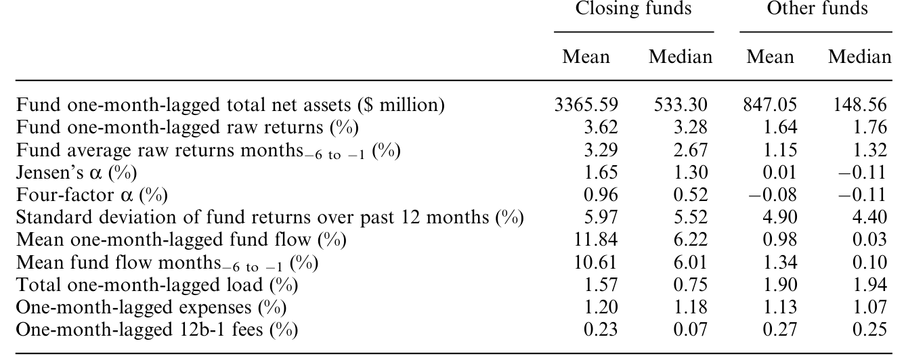
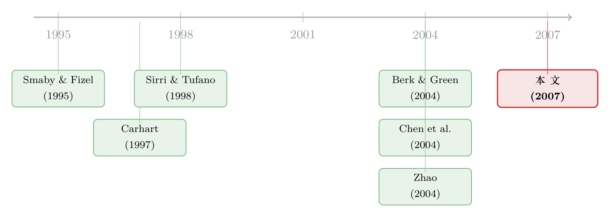

「关门谢客」的基金，到底是好管家，还是会说漂亮话的人？
本文读的是 Bris, Gulen, Kadiyala & Rau (2007, Review of Financial Studies)：作者手工收集了 1993–2004 年间 125 只「关门谢客」的美国股票型基金，发现基金确实是在业绩与资金流双双火爆之后才关门，但关门之后既不能延续超额收益、重新开门后也照样不能；真正发生的事情是——基金经理趁机把费率从 0.86% 抬到了 0.90%。所以基金经理既不是「好管家」，也不是「家族功臣」，更像是一个嘴上说着为你好、手上把价签悄悄往上挪的人。
1 一句让人犯嘀咕的好话
「Go away（请走开）」——这通常不是你想从一家想跟它做生意的公司那里听到的话。可在共同基金这个行当里，偏偏有一类基金会主动对潜在投资者说这句话：我满了，不收新钱了。 业内管这叫「基金关闭」（fund closing），也就是停止向新投资者开放申购。
更微妙的是，市场普遍把这件事解读成一种美德。Morningstar 的基金研究总监就公开说过，「关闭基金是判断一家基金公司是否把持有人的长期利益放在自己短期利润之前的最好指标之一」；Morningstar 甚至把「愿不愿意在基金变得过于臃肿之前主动关门」写进了它评估「管家精神」（stewardship rating）的打分项里。
可这套说辞，经不起一句最朴素的追问。基金经理通常按管理资产规模（assets under management）的一个百分比来拿钱——那么关门、把规模压住，岂不是在主动减少自己的收入？他们说，关门是为了保护投资者的回报。但作者一针见血地指出：这个理由其实站不住脚。任何一只基金都可以靠缩小规模来提高单位回报，如果这真是基金的目标，那所有基金都该关门才对。
于是问题就摆在了桌面上：基金，到底为什么要关门？
这正是 Bris、Gulen、Kadiyala 与 Rau 这四位作者想回答的。他们没有满足于「关门=好管家」这个流行叙事，而是把它拆成三个互相竞争的假设，再用一个迄今为止最完整的美国股票型基金关闭样本，把它们一个个拉出来对质。
2 三个嫌疑人：好管家、说漂亮话的人、还是家族功臣？
作者把「为什么关门」摊成三种假说，像三个嫌疑人一样排排站好。
第一个嫌疑人：好管家假说（good steward hypothesis）。 它说，基金经理之所以关门，是为了限制新钱涌入、守住业绩。这背后其实接的是 Berk and Green (2004) 那个著名的理性模型——业绩好的基金会吸来大量资金，而由于「主动管理存在规模收益递减」（decreasing returns to scale），规模一大，超额收益就被稀释殆尽，最终跑不赢被动基准。好管家假说顺着这条逻辑往下推：真正优秀的经理，会主动通过限制资金流入来服务持有人。它有一个非常硬的、可证伪的预测——基金重新开门，是因为规模已经缩回到能再创造超额收益的水平，所以开门之后业绩应该能维持。
第二个嫌疑人：说漂亮话假说（cheap talk hypothesis）。 它同意「基金大到超过最优规模才关门」这一点，但它说：很少有基金真的「彻底」关门——几乎所有基金都仍对老投资者开放。如果老投资者继续贡献新钱，关门其实没什么真实成本。更要命的是，基金经理还能涨费率。这个假说的核心一句话是：与其从新资本的流入里拿涨薪，基金经理完全可以同样轻松地——靠抬高费率来拿这笔涨薪。这同样和 Berk and Green (2004) 兼容，只不过经理选择的提租方式，是关门后涨费，而不是不关门、任由资金涌入。Warner and Wu (2005) 就记录过，资产高速增长会提高基金顾问合同被修改的概率，而且这种费率调整幅度往往不小，典型的变动超过四分之一。
第三个嫌疑人：家族溢出假说（family spillover hypothesis）。 它说，关掉一只明星基金，是为了把市场的注意力导流到同一基金家族旗下那些不那么有名的基金上。Zhao (2004) 就发现过这类证据。它和前两个假说有个根本区别：做出「关门」决定的，是基金家族的董事或高管，而不是单只基金的经理本人。
这三者并不互斥——一只基金完全可能既因为老投资者继续给钱而没什么关门成本，又顺手替家族里别的基金做了广告。但作者的实证设计，恰恰能让我们看清哪个机制在数据里真正成立。
3 识别策略：把「关门」当成一个事件来研究
这篇文章本质上是一个事件研究（event study）。识别的逻辑很直白：把每一只基金的时间轴对齐到它的「事件月」——关门月或重新开门月——然后看事件前后，业绩、资金流、费率各自发生了什么。
这里没有外生的政策冲击，也没有工具变量。它的「识别」靠的是事前—事后对比加上一个精心构造的对照组：把每只关门基金，与那些在同一时点、同一投资风格、却没有关门的所有其他股票型基金做配对。这样算出来的，是「风格调整」（style-adjusted）后的超额量——基金自己的数字，减去同投资目标下其他基金的平均（或中位）数字。
具体而言，作者关心几条线索：
- 业绩：用 Jensen's α 和 Carhart 四因子 α（Carhart, 1997）来度量风险调整后的超额收益，要求基金在事件前后各有至少 9 个月、最好 12 个月的月度回报数据。
- 资金流：fund flow 怎么算？作者采用了一个略经修正的定义——
$$\text{Fund flow}_t = \frac{TNA_t - (1+r_t)\,TNA_{t-1}}{(1+r_t)\,TNA_{t-1}}$$
这里 \(TNA_t\) 是基金在 \(t\) 月的总净资产（total net assets），\(r_t\) 是上一个月的回报。注意分母用的是 \((1+r_t)TNA_{t-1}\)，而非传统文献（如 Sirri and Tufano, 1998）里直接用的 \(TNA_{t-1}\)。Berk and Xu (2004) 讨论过传统度量的潜在问题；作者说换回传统度量结论也不变。直觉上，这个分子在剔除了「资产因自身涨跌而变动」的部分后，剩下的才是真正由申购赎回带来的净流入。
- 费率：这是全文最讲究的一处数据活。CRSP 里的费用数据是按份额类别（share class）报告的，作者嫌不够，专门去手工挖了基金向 SEC 报送的 N-SAR 报表，用来算管理顾问费（advisory fee）。
这里还藏着一个常被忽视、却很关键的数据处理决定：CRSP 的所有数据都是按份额类别记录的，而本文需要的是基金层面的资金流和 TNA。作者没有像很多文献那样「只取主份额类别」省事，而是把同一只基金的所有份额类别合并、重建出整套基金层面的数据集——TNA 直接相加，回报、费用率、12b-1 费等则跨份额类别取平均。理由很实在：剩下的份额类别往往和主份额类别一样大，只取一个会丢信息、还会扭曲对「回报—规模」「回报—资金流」关系的推断。
4 数据：一份「打了好几通电话」打磨出来的样本
样本的来源本身就是个故事。主数据源是 Factiva 新闻档案库，作者用「mutual fund closures」「fund closed to new investors」「fund reopening」等关键词的各种变体去搜；再用 Lipper Analytical Services（2001 年 12 月）和 Morningstar Principia（2001 年 12 月、2005 年 3 月）的数据补充。但这些快照数据有个硬伤：它们只列当时已关闭的基金，不会列那些「曾经关过、后来又开了」的基金。于是作者干脆给每一只关过门的基金打电话，问它所属家族里还有没有别的基金关过门、关门和开门的日期分别是哪天——顺便核对 Morningstar 和 Lipper 报的日期。
初始样本是 166 只 1993–2004 年间关门的基金。经过层层筛选——剔除关门前在 CRSP 没有回报数据的、没有费率数据的、关门后不到一年就重开的（因为算 α 需要至少 12 个月观测）、以及 9 只国际型基金——最终留下 125 只基金，对应 206 个事件，其中 140 个是关门事件、66 个是重开事件。样本的投资风格高度集中：按 ICDI 分类，69% 是激进成长（aggressive growth）、另有 17% 是长期成长——这恰恰是 Chen et al. (2004) 发现「规模与业绩负相关」最显著的那一类基金。
5 主要结果：四步走，步步打脸「好管家」
第一步：基金确实是在「最风光」的时候关门的
关门前的那一年，这些基金风光无限：风格调整后的超额收益高达 15%，月度四因子 α 显著为 1%；同期它们经历了风格调整后高达 98% 的超额资金流入。关门那一刻，样本基金的规模大约是同风格中位数基金的 1.4 倍（正文另一处说中位关门基金比全市场中位股票基金大三倍多）。
表 2 把这幅「关门基金 vs 其他基金」的画像摆得清清楚楚。关门基金关门前一个月的资金流入均值是 11.84%，而普通股票基金只有 0.98%；关门前六个月的平均月流入是 10.61%，是普通基金 1.34% 的整整八倍。业绩上，关门基金的四因子 α 中位数是 0.52%，普通基金是 −0.11%；Jensen's α 中位数 1.30% 对 −0.11%。一句话：钱追着业绩跑，业绩好的基金被追到满。（关于「钱追着去年的收益跑」这件事的另一面，可参见《钱追着「去年的收益」跑：401(k) 里 83% 的人都在「认错了树」》。）

Table 2: compares the mean and median characteristics of closing funds
值得一提的是，关门基金的 12b-1 费（一种用于分销和营销的费用）反而比留着开门的基金还略低——它们根本不需要花钱打广告，钱自己就涌进来了。
第二步：关门，确实把钱挡住了
关门是有效的。关门后的那一年，累计的原始与风格调整后超额资金流分别掉到 −3% 和 −6%。换句话说，关门确实对资金流入施加了真实的约束。这一步很重要——它排除了「关门只是说说而已、钱照进不误」的可能，让接下来的检验有了意义。
第三步：可是，业绩并没有被「守住」
这才是给好管家假说的第一记重拳。关门后的那一年，平均关门基金的月度四因子 α 只有 0.15%，显著低于关门前的水平。规模是压住了，钱也挡住了，业绩却没守住。好管家假说预测的「超额收益得以维持」，没有出现。
第四步：钱从哪儿来？从你的费率里来——说漂亮话假说成立
业绩没守住，那基金经理的收入是不是受损了？答案是：几乎没有，因为他涨了费。 关门基金的毛顾问费（按 TNA 的百分比计）从关门前的 0.86% 抬到了关门后的 0.90%，差异在统计上显著。
0.04% 看着像个小数，一个天真的投资者会觉得无所谓。作者特意停下来算了一笔账，把这个数字的分量掰给你看：设想一只在拥有 $1 billion 管理规模时关门的基金。把费率从 0.86% 抬到 0.90%，经理一年就多赚 $400,000。反过来，如果他不涨费、想靠投资本事赚到同样多的钱，他得把超额收益硬生生提高 4%。在整个样本里，平均费率上调折算成美元，大约相当于 $7 million 的经理薪酬增量。
这就是「说漂亮话」的精髓：嘴上说「我关门是为你好」，手上却把提租的方式从「收更多管理费（靠规模）」悄悄换成了「收更高费率（靠涨价）」。对经理而言，关门几乎是零成本的——他既赢得了「好管家」的名声，又没少拿钱。
顺带：家族溢出，基本不成立
家族里别的基金沾到光了吗？关门当月，家族的中位资金流入只增加了 1.3%，而且只是暂时的——两个月后就跌回关门前的水平。更何况，关门时给家族带来的那点额外流入，等到这些基金日后重新开门时，又几乎被家族的资金流出完全抵消掉了。
最后的反转：重新开门，照样不行
作者手里还有一张王牌——66 只在关门至少一年后重新开门的基金。好管家假说在这里有最锋利的预测：基金重开，是因为规模已经缩到能再赚超额收益的水平，所以开门后业绩应当恢复。
数据确实显示，基金是在 TNA 大幅缩水后才重开的：重开基金从关门时的同风格中位数 1.5 倍，缩到了重开月的仅 1.1 倍。规模条件齐了。可业绩呢？重开后 12 个月，四因子 α 和累计风格调整异常收益都不显著。更扎心的是，重开前的那一年，这些基金其实在赚负的风险调整收益：四因子 α 为 −0.1%，相对风格基准的年度异常收益是显著的 −3.8%——比关门后那一年的表现还要差。
业绩在关门期间持续恶化、重开前还在亏，这彻底否定了好管家假说：基金管理层根本不可能是「看到业绩改善了才决定重开」的。
把四步连起来看，结论只剩一个：最符合数据的，是说漂亮话假说。 关门基金既不在关门后、也不在重开后赚超额收益；经理虽然面对真实的资金约束，却靠涨费把成本转嫁了出去；家族除了关门那一瞬的短期红利外，并没捞到什么实质好处，而这点边际收益在基金重开时也大半烟消云散。
6 文献脉络：从「关门是好事吗」到「规模到底坑不坑业绩」
这篇文章其实站在两条研究线的交汇处。
第一条线，是「基金关闭」本身。 在本文之前，认真研究「基金为什么关门、关门后表现如何」的文章屈指可数。Smaby and Fizel (1995) 看了 1982–1992 年间 25 只关门基金，报告说它们在关门后 24 个月里赚不到显著超额收益、且相对自己关门前的业绩还下滑了。Manakyan and Liano (1997) 用 1978–1994 年的 27 只基金，同样没找到「关门后三年跑赢基准」的证据。Zhao (2004) 的样本最接近本文——139 只 1992–2001 年间关门的股债基金——他没发现关门能保护业绩，倒是找到了「关门伴随同家族其他基金短期流入上升」的微弱证据，这正是家族溢出假说的源头。
第二条线，是「业绩追逐」与「规模收益递减」。 Chevalier and Ellison (1997) 和 Sirri and Tufano (1998) 记录了投资者会追逐过往业绩，可业绩本身并不持续——这给「投资者理性」打了个问号。Berk and Green (2004) 用一个漂亮的理性模型化解了这个张力：理性投资者把钱投向业绩好的基金，但由于主动管理规模收益递减，这些基金随后拿到的大笔流入会把超额收益稀释掉，最终跑不赢被动基准。Chen et al. (2004) 则从实证上夯实了「规模侵蚀业绩」这块基石。

本文恰好坐在这两条线的交点上，并各自添了一块砖。对关闭文献，它贡献了迄今最全面的美国股票型基金样本，并第一个检验了重开后的业绩；对规模文献，它补充了一个微妙却重要的发现：基金回报随滞后规模下降的关系，只在那些经历大额资金流入的基金里显著；对低流入的基金，规模和业绩并不相关。 换句话说，坑业绩的不只是「大」，而是「又大又在猛进钱」。
7 评论与延伸（Q&A + 研究方向）
(a) 几个可能的疑问
Q：「说漂亮话」和「好管家」，到底差在哪一处？
差在关门后业绩能不能维持这个可证伪的预测上。两者都同意「基金大到超过最优规模才关门」，但好管家说关门是为了守住超额收益、所以关门后（和重开后）业绩应能维持；说漂亮话则认为关门对经理几乎无成本（老钱继续进、还能涨费），因而不对关门后业绩做任何乐观承诺。数据里业绩没守住、重开后也不行，于是天平倒向了后者。
Q：费率只涨了 0.04%，这真有那么重要吗？
重要，而且是经济意义上的重要，不只是统计显著。作者的算法是：一只
$1 billion的基金，费率从0.86%升到0.90%，经理一年多赚$400,000；要靠投资本事赚回同样的钱，他得把超额收益提高整整4%。涨费这条路，比靠本事赚钱容易太多了。
Q：会不会是「幸存者偏差」——只有差基金才需要靠涨费来续命？
不太像。本文用的是 CRSP 的「免幸存者偏差」（survivorship-bias free）数据库，且对照组是同期、同风格的全体在世基金。况且故事的方向恰恰相反：关门基金在关门前是业绩最好、最被追捧的那一批，不是濒死的差基金。它们有「资格」关门、也有「资本」涨费。
Q：基金不是按规模收费吗？关门压规模，不就等于自断财路？
表面看是，这也是全文的出发悬念。但作者点破了两件事：其一，几乎没有基金真正「彻底」关门，老投资者还能继续申购；其二，经理可以把提租方式从「多收（规模×费率里的规模）」换成「贵收（抬高费率）」。两条加起来，关门的真实成本被压到很低。
Q：那为什么基金后来又要重新开门？
这正是好管家假说唯一能解释、而另两个假说都解释不了的地方——好管家说「规模缩回来了、又能赚超额了，所以重开」。可数据显示重开前业绩是
−3.8%的年度异常收益、重开后 α 也不显著，规模条件满足了、业绩条件却没满足。所以连「为什么重开」这个问题，好管家假说也没能站住。
Q：这跟 Berk and Green (2004) 矛盾吗？
不矛盾，反而是它的一个实证注脚。Berk-Green 的核心是「业绩好→吸金→规模收益递减→超额收益归零」，经理通过收取租金（rents）变现自己的技能。本文只是指出：在关门这个具体情境里，经理选择的变现方式是涨费，而不是「不关门、任凭资金涌入再多收管理费」。两种都是提租，殊途同归。
(b) 几个可能的研究问题与提案
1. 把这套检验搬到公司债基金上。 - 【经济故事】股票型基金的「规模收益递减」主要来自交易的价格冲击；而公司债市场是出了名的流动性差、做市商主导，规模对业绩的侵蚀机制理应更强。那么债基关门时，是「好管家」还是「说漂亮话」？涨费行为会不会因为债基投资者对费率更敏感而受抑制？ - 【可行性】中。需要 CRSP/Morningstar 的债基样本 + N-SAR 费率数据 + TRACE 的债券成交数据来刻画底层流动性。识别仍是事件研究，难点在于债基关门事件本就稀少、且常与赎回潮纠缠。可与《基金的「不可能三角」：当规模、费率与流动性必须互相让步》对话。
2. 外资持有人会不会改变「关门—涨费」的算计？ - 【经济故事】如果一只基金的持有人结构里机构、尤其是跨境机构占比很高，这些「精明钱」对费率上调的容忍度可能远低于散户。那么高机构占比的基金，关门后还敢不敢涨费？这能把「说漂亮话」机制进一步拆成「对谁说漂亮话有用」。 - 【可行性】中偏低。需要份额类别层面的持有人构成（机构 vs 零售份额）或 13F 衍生数据，跨境维度更难。识别可用「关门前机构占比」做截面分组。
3. 重新开门的「择时」里藏着私人信息吗？
- 【经济故事】本文发现重开前业绩是负的——那经理究竟在「看什么」决定重开？如果重开决定与家族层面的资金压力、或经理个人薪酬合同的临界点相关，就说明重开不是「为投资者择时」，而是「为自己择时」。
- 【可行性】高。重开事件有 66 个，可把重开时点对到家族净流入、经理薪酬合同变更（N-SAR / 顾问合同）上做生存分析（hazard model）。数据基本都在本文已用的来源里。
4. 「关门是好管家」的标签，到底值多少钱？ - 【经济故事】Morningstar 把「愿意关门」写进了 stewardship rating。如果市场（资金流）真的奖励这个标签，那基金经理涨费的底气，部分就来自这块「声誉补贴」。可以直接估计：拿到高 stewardship 评级，能为基金家族换来多少额外的跨基金资金流？ - 【可行性】中。需要 Morningstar 的 stewardship 评级历史 + 家族层面资金流，识别上可用评级公布的断点或评级变更事件。诚实地说，评级是内生的，干净识别不易。
8 我的判断
这篇文章最漂亮的地方，是它把一个被「美德叙事」包裹起来的现象，用一套可证伪的预测拆得干干净净。三个假说各有明确的、互相区分的预测，作者再用关门、重开两个事件、业绩、资金流、费率三条线索去逐一对质——尤其是「重开后业绩」这个此前无人检验过的角度，几乎是为好管家假说量身定做的「死刑判决」。结论既反直觉（关门不是为你好），又在经济上算得清清楚楚（$7 million 的薪酬增量），这是好实证文章的样子。
但识别上有几处值得保留。其一，这不是因果识别——没有外生冲击，「关门」本身是基金的内生选择，作者刻画的是关门基金与对照组的相关性差异，严格说不能排除「某种未观测特征同时驱动了关门和涨费」。其二，样本高度集中在激进成长与小盘风格，这正是规模最坑业绩的角落，结论能不能外推到大盘价值类基金，存疑。其三，费率上调虽显著，但 0.86%→0.90% 的幅度毕竟不大，「说漂亮话」与「轻度好管家」之间或许并非非此即彼——一只基金完全可能既真心想护住一点业绩、又顺手涨了点费。
我接下来最想看到的，是把「持有人结构」放进来：到底是对谁说漂亮话才管用？散户买账、机构不买账的猜想，如果能在数据里坐实，就能把这篇文章从「基金经理会提租」推进到「提租在什么样的投资者面前才行得通」——而这恰恰是连接基金行为与市场纪律（market discipline）的关键一环。
参考文献
Berk, J. B., and R. C. Green (2004). Mutual Fund Flows and Performance in Rational Markets. Journal of Political Economy 112, 1269–1295.
Berk, J. B., and J. Xu (2004). Persistence and Fund Flows of the Worst Performing Mutual Funds. Unpublished Working Paper, University of California, Berkeley.
Carhart, M. (1997). On Persistence in Mutual Fund Performance. Journal of Finance 52, 57–82.
Chen, J., H. Hong, M. Huang, and J. D. Kubik (2004). Does Fund Size Erode Mutual Fund Performance? The Role of Liquidity and Organization. American Economic Review 94, 1276–1302.
Chevalier, J. A., and G. D. Ellison (1997). Risk Taking by Mutual Funds as a Response to Incentives. Journal of Political Economy 105, 1167–1200.
Manakyan, H., and K. Liano (1997). Performance of Mutual Funds Before and After Closing to New Investors. Financial Services Review 6, 257–269.
Sirri, E. R., and P. Tufano (1998). Costly Search and Mutual Fund Flows. Journal of Finance 53, 1589–1622.
Smaby, T. R., and J. L. Fizel (1995). Fund Closings as a Signal to Investors: Investment Performance of Open-End Mutual Funds that Close to New Shareholders. Financial Services Review 4, 71–80.
Warner, J. B., and J. S. Wu (2005). Changes in Mutual Fund Advisory Contracts. Unpublished Working Paper, University of Rochester.
Zhao, X. (2004). Why Are Some Mutual Funds Closed to New Investors? Journal of Banking and Finance 28, 1867–1887.